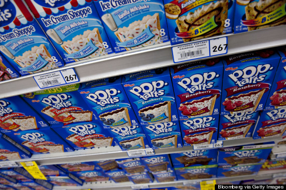
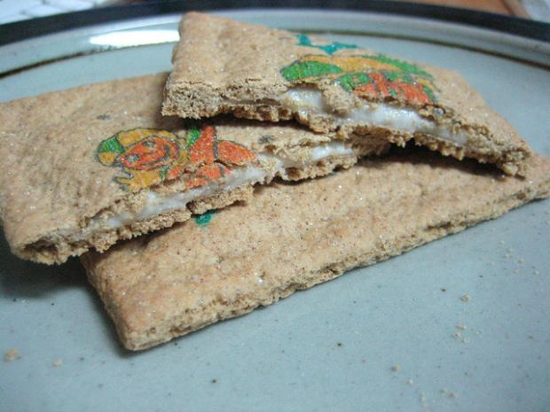

This is a website all about poptarts. I dont know why but poptarts yeah
jump to a dumb fact about poptartsHere is a poptart fact. Poptarts came from a refridgerated dog food invention
Before poptarts they were country squares
Unfrosted poptarts contain more calories than frosted ones
Poptarts can set toasters on fire if they are being cooked for too long.
Here is a commercial for when poptarts decided to make a cereal. It's discontinued if your wondering.